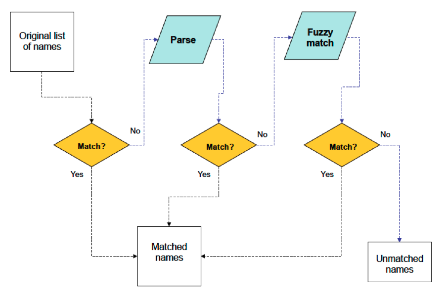

About TNRS
Table of Contents
What is TNRS? Why do we need a TNRS? Where does TNRS get its synonymy? How does the TNRS work? Software Contributors Funding TNRS API Literature cited Source codeWhat is the Taxonomic Name Resolution Service?
The Taxonomic Name Resolution Service (TNRS) is a tool for the computer-assisted standardization of plant scientific names. The TNRS corrects spelling errors and alternative spellings to a standard list of names, and converts out of date names (synonyms) to the current accepted name. The TNRS can process many names at once, saving hours of tedious and error-prone manual name correction. For names that cannot be resolved automatically, the TNRS present a list of possibilities and provides tools for researching and selecting the preferred name.
Why do we need a TNRS?
Taxonomic standardization is a major challenge for virtually every field of plant biology. Ecological studies encompassing large numbers of species, conservation decisions based on data from multiple sources, molecular analyses linking sequence data to organisms all require accurate species names, and the correct matching of names among data sets.
Misspelled or out-of-date, synonymous names can be a major source of error. Large, collaborative databases such as GBIF, SpeciesLink, VegBank, SALVIAS, TraitNet, and GenBank are plagued by taxonomic problems, with up to 30% of names unmatched to any published name. Even among published names, 5% to 20% are synonymous. Despite the growing availability of digitized sources of names (www.ipni.org, www.globalnames.org, www.tropicos.org, www.ubio.org) and taxonomic opinion (www.tropicos.org, www.theplantlist.org), taxonomic standardization remains an error-prone and largely manual process. The need for an automated name resolution service has never been greater.
Where does the TNRS get its synonymy?
Synonymy is the conversion of out-of-date (synonymous) names to accepted names. Such conversions are not always simple; taxonomists can differ in their opinion as to which of a series of names is the correct one. Where possible, the TNRS presents a single best accepted name, as determined by the selected source(s) according to source specific data. In the case of Tropicos, a computed acceptance algorithm is used to provide a variety of decision criteria, including date of publication and acceptance within exper-curated project checklists, as the basis for choosing among conflicting taxonomic opinions. Computed acceptance is a machine-based decision process, and users of the TNRS should bear in mind the following caveat provided by Tropicos:
Computed acceptance is an automated evaluation of acceptance using Tropicos digital flora projects, homotypic synonymy, and heterotypic synonymy. This is NOT a human-curated, peer-reviewed checklist. Its quality is driven by our algorithm and the accuracy and availability of the data in the Tropicos system.
How does the TNRS work?
The TNRS attempts to match each name submitted to a published scientific name in the TNRS database, correcting spelling if necessary. Once the name has been matched, if the name is a synonym it is converted to the correct (accepted) name.
Spelling correction consists of the following steps:
- Match. The TNRS attempts to match the name directly to a name in the TNRS database.
- Parse. If matching fails, the name is parsed to separate out any contaminating substrings that may prevent matching, and to decompose the name into component parts that can be analyzed separately (for example, the genus name is separated from the specific epithet). Parsing is performed by our implementation of the GNI name parser.
- Match. The parsed name components are again matched against the TNRS database.
- Fuzzy match. If the parsed name fails to match fully, the TNRS attempt to find near matches using a modified Taxamatch taxonomic fuzzy matching algorithm. Fuzzy matching is generally slow; however, the Taxamatch algorithm speeds matching by searching within the taxonomic hierarchy. For example, once the genus has been identified, only species within that genus are searched. Although the original Taxamatch was limited to finding genera and species, the TNRS implementation can match up to family (if submitted), and down to subspecies and varieties (trinomials), even varieties within subspecies (quadrinomials).
These steps are illustrated in the figure below:

Software
Code from the following open source applications was used during the development of the TNRS:
- Original Taxamatch Algorithm- Developed by Tony Rees (CSIRO).
- Taxamatch Web Service (a PHP Port)- Special thanks for assistance from Michael Giddens.
- Global Names Index (Parser)- Special thanks for assistance from Dmitry Mozzherin.
Contributors
TNRS was developed by the iPlant Collaborative Tree of Life Project, in collaboration with the Missouri Botanical Garden and the Botanical Information and Ecology Network.
Numerous members of the taxonomic and informatics community provided advice, access to data, and source code.
Project direction and development
- Brad Boyle
- Brian Enquist
- Juan Antonio Raygoza Garay
- Nicole Hopkins
- Zhenyuan Lu
- Naim Matasci
- Martha Narro
- Shannon Oliver
- William Piel
- Jill Yarmchuk
- iPlant staff
Collaborators
- Bob Magill (Missouri Botanical Garden)
- Chris Freeland (Missouri Botanical Garden)
- Chuck Miller (Missouri Botanical Garden)
- Peter Jorgensen (Missouri Botanical Garden)
- Amy Zanne (University of Missouri, St. Louis)
- Peter Stevens (Missouri Botanical Garden)
- Jay Paige (Missouri Botanical Garden)
- Bob Peet (University of North Carolina at Chapel Hill)
- Paul Morris (Harvard University)
- Alan Paton (Kew Royal Botanic Gardens and their International Plant Names Index)
- Tony Rees (Commonwealth Scientific and Industrial Research Organisation)
- Michael Giddens (www.silverbiology.com)
- Dmitry Mozzherin (Global Biodiversity Information Facility)
- David Remsen (Global Biodiversity Information Facility)
- David Patterson (Encyclopedia of Life)
- Cam Webb (Harvard University)
Institutions
Funding
Funding provided by the National Science Foundation Plant Cyberinfrastructure Program (grant #DBI-0735191).TNRS API
The TNRS API is in the early stages of development. Currently it consists of a single service to which a list of names is submitted.
Use GET to call to the matchNames service, found at: http://tnrs.iplantc.org/tnrsm-svc/matchNames
Easy ways to submit names to the service include entering a query in your web browser or using the Linux curl tool.
Two parameters are required:
- retrieve specifies whether to retrieve all matches for the names submitted. There are currently two options: retrieve=best retrieves only the single best match for each name submitted; retrieve=all retrieves all matches.
- names is followed by a comma separated list of names being submitted. Spaces in names must be url-encoded.
Here is a short example in which the best matches are requested for four names:
http://tnrs.iplantc.org/tnrsm-svc/matchNames?retrieve=best&names=zea%20mays,acacia,solanum,saltea
An example call to the API using R can be found in this document.
Output is currently returned in JSON format. The service will be expanded soon to support output in XML and CSV as well. In addition, parameters will be added soon to specify output format, encoding, and compression of the results.
Source code
All source code is available in our GitHub repository
Except where noted below, code is licensed using this standard BSD license, which is an Open Source Initiative-approved license.
We built on two existing open source projects, each of which retain their original licensing.
- TaxaMatch (link to repo to be added) from this this repository was modified to customize it for use with our service and uses the Apache 2.0 license.
- GNI's name parser (link to repo to be added) from this repository was also modified slightly to better fit our service and uses a BSD style license.
Literature cited
APG III. 2009. An update of the angiosperm phylogeny group classification for the orders and families of flowering plants: APG III. Bot. J. Linn. Soc. 161: 105-121.
Chase, M. W. & J. L. Reveal. 2009. A phylogenetic classification of the land plants to accompany APG III. Bot. J. Linn. Soc. 161: 122-127.
Haston, E., J. E. Richardson, P. F. Stevens, M. W. Chase & D. J. Harris. 2009. The linear angiosperm phylogeny group (LAPG) III: a linear sequence of the families in APG III. Bot. J. Linn. Soc. 161: 128-131.